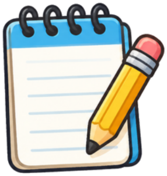
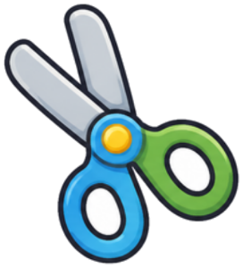

🔐 4번 방 · 모두를 위한 물건 생각하기18차시 / 15~19도입

물건 교과서 · 방 탈출 미션
4번 방 · 18차시
모두를 위한
작은 발명
교실의 불편함을 해결해 봐요.
🚨 마법사의 비웃음!

MISSION BRIEFING
오늘의 미션 세 가지
미션 1

브레인 릴레이
종이를 돌리며 생각 모으기
미션 2
작은 발명 설계
가장 좋은 생각을 그려요
미션 3

모형 만들고 발표
재활용품으로 뚝딱!
보상
열쇠 조각 4
4번 방 네 번째!
🎯 학습 목표 우리 교실의 불편함을 해결할 물건이나 방법을 여러 가지로 생각하고, 모형으로 나타낼 수 있어요.
NEXT MISSION
19차시 예고 · 4번 방 마지막
우리의 생각을
우리의 생각을
실제로 바꾸기
교실을 진짜로바꾸고, 전과 후를 비교해요.
📦 오늘 만든 모형을 잘 보관해요!